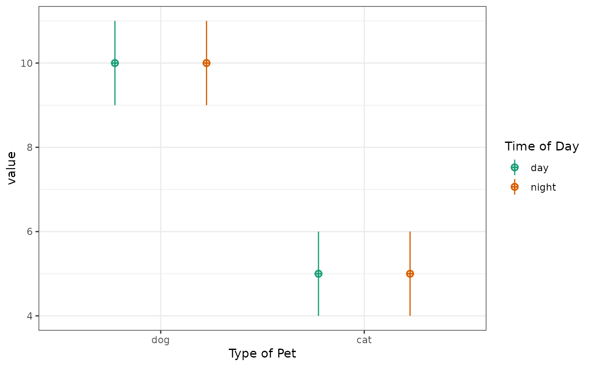
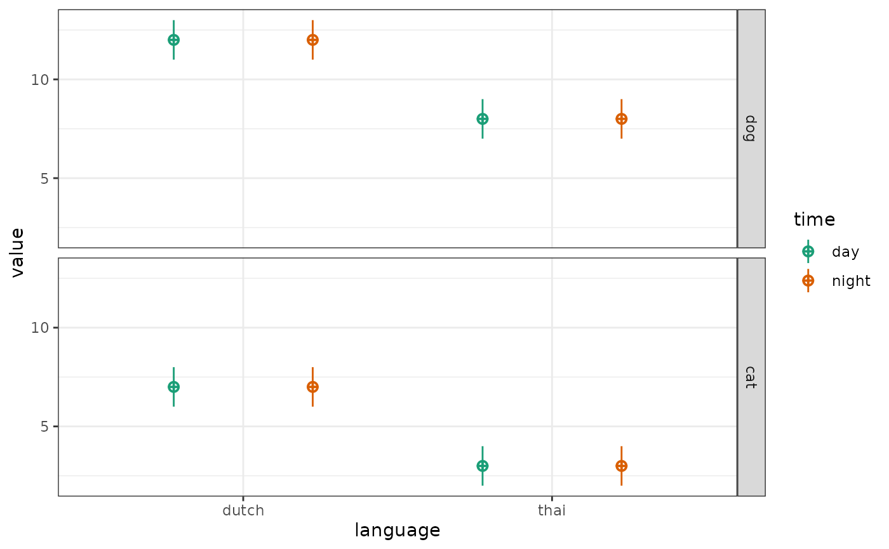

Specify any number of within- and between-subject factors with any number of levels.
Usage
check_design(
within = list(),
between = list(),
n = 100,
mu = 0,
sd = 1,
r = 0,
dv = list(y = "value"),
id = list(id = "id"),
vardesc = list(),
plot = faux_options("plot"),
design = NULL,
fix_names = FALSE,
sep = faux_options("sep")
)Arguments
- within
a list of the within-subject factors
- between
a list of the between-subject factors
- n
the number of samples required
- mu
a vector giving the means of the variables
- sd
the standard deviations of the variables
- r
the correlations among the variables (can be a single number, full correlation matrix as a matric or vector, or a vector of the upper right triangle of the correlation matrix
- dv
the name of the DV column list(y = "value")
- id
the name of the ID column list(id = "id")
- vardesc
a list of variable descriptions having the names of the within- and between-subject factors
- plot
whether to show a plot of the design
- design
a design list including within, between, n, mu, sd, r, dv, id
- fix_names
deprecated
- sep
separator for factor levels
Details
Specify n for each between-subject cell; mu and sd for each cell, and r for the within-subject cells for each between-subject cell.
This function returns a validated design list for use in sim_data to simulate a data table with this design, or to archive your design.
Examples
within <- list(time = c("day", "night"))
between <- list(pet = c("dog", "cat"))
mu <- list(dog = 10, cat = 5)
vardesc <- list(time = "Time of Day", pet = "Type of Pet")
check_design(within, between, mu = mu, vardesc = vardesc)

between <- list(language = c("dutch", "thai"),
pet = c("dog", "cat"))
mu <- list(dutch_dog = 12, dutch_cat = 7, thai_dog = 8, thai_cat = 3)
check_design(within, between, mu = mu)
